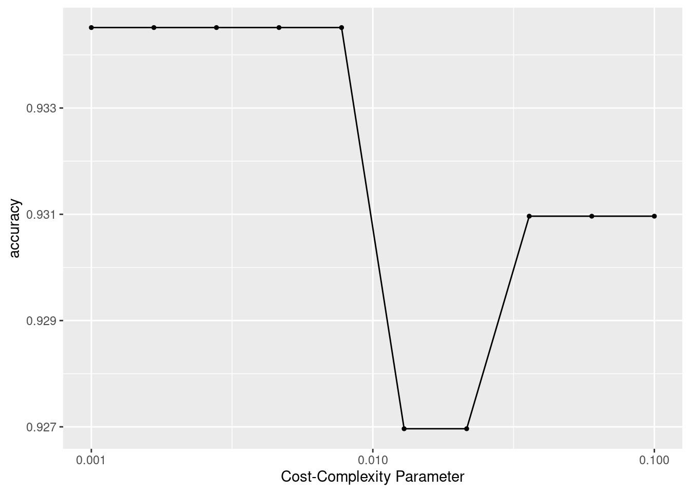

The following package(s) will be installed:
- palmerpenguins [0.1.1]
These packages will be installed into "~/work/378kimproj/378kimproj/renv/library/R-4.2/x86_64-pc-linux-gnu".
# Installing packages --------------------------------------------------------
- Installing palmerpenguins ... OK [linked from cache]
Successfully installed 1 package in 6.6 milliseconds.
install.packages("dplyr")
The following package(s) will be installed:
- dplyr [1.1.4]
These packages will be installed into "~/work/378kimproj/378kimproj/renv/library/R-4.2/x86_64-pc-linux-gnu".
# Installing packages --------------------------------------------------------
- Installing dplyr ... OK [linked from cache]
Successfully installed 1 package in 3.8 milliseconds.
install.packages("dbplyr")
# Downloading packages -------------------------------------------------------
- Downloading dbplyr from CRAN ... OK [1.2 Mb in 0.23s]
- Downloading blob from CRAN ... OK [44.8 Kb in 0.14s]
- Downloading DBI from CRAN ... OK [852.6 Kb in 0.23s]
- Downloading tidyselect from CRAN ... OK [216.9 Kb in 0.17s]
- Downloading purrr from CRAN ... OK [473.8 Kb in 0.21s]
- Downloading tidyr from CRAN ... OK [1.1 Mb in 0.2s]
- Downloading cpp11 from CRAN ... OK [273.6 Kb in 0.22s]
Successfully downloaded 7 packages in 2.2 seconds.
The following package(s) will be installed:
- blob [1.2.4]
- cpp11 [0.4.7]
- DBI [1.2.2]
- dbplyr [2.5.0]
- purrr [1.0.2]
- tidyr [1.3.1]
- tidyselect [1.2.1]
These packages will be installed into "~/work/378kimproj/378kimproj/renv/library/R-4.2/x86_64-pc-linux-gnu".
# Installing packages --------------------------------------------------------
- Installing blob ... OK [installed binary and cached in 0.53s]
- Installing DBI ... OK [installed binary and cached in 0.53s]
- Installing tidyselect ... OK [installed binary and cached in 0.56s]
- Installing purrr ... OK [installed binary and cached in 0.56s]
- Installing cpp11 ... OK [installed binary and cached in 0.44s]
- Installing tidyr ... OK [installed binary and cached in 0.78s]
- Installing dbplyr ... OK [installed binary and cached in 1.0s]
Successfully installed 7 packages in 4.6 seconds.
install.packages("ggplot2")
The following package(s) will be installed:
- ggplot2 [3.5.0]
These packages will be installed into "~/work/378kimproj/378kimproj/renv/library/R-4.2/x86_64-pc-linux-gnu".
# Installing packages --------------------------------------------------------
- Installing ggplot2 ... OK [linked from cache]
Successfully installed 1 package in 3.9 milliseconds.
install.packages("DBI")
The following package(s) will be installed:
- DBI [1.2.2]
These packages will be installed into "~/work/378kimproj/378kimproj/renv/library/R-4.2/x86_64-pc-linux-gnu".
# Installing packages --------------------------------------------------------
- Installing DBI ... OK [linked from cache]
Successfully installed 1 package in 3.7 milliseconds.
install.packages("duckdb")
# Downloading packages -------------------------------------------------------
- Downloading duckdb from CRAN ... OK [10.6 Mb in 0.52s]
Successfully downloaded 1 package in 0.99 seconds.
The following package(s) will be installed:
- duckdb [0.10.1]
These packages will be installed into "~/work/378kimproj/378kimproj/renv/library/R-4.2/x86_64-pc-linux-gnu".
# Installing packages --------------------------------------------------------
- Installing duckdb ... OK [installed binary and cached in 1.3s]
Successfully installed 1 package in 1.6 seconds.
install.packages("vetiver")
# Downloading packages -------------------------------------------------------
- Downloading vetiver from CRAN ... OK [550.8 Kb in 0.21s]
- Downloading bundle from CRAN ... OK [1.4 Mb in 0.21s]
- Downloading butcher from CRAN ... OK [266.3 Kb in 0.14s]
- Downloading lobstr from CRAN ... OK [129.3 Kb in 0.19s]
- Downloading crayon from CRAN ... OK [154.9 Kb in 0.16s]
- Downloading prettyunits from CRAN ... OK [151.5 Kb in 0.25s]
- Downloading cereal from CRAN ... OK [44.5 Kb in 0.15s]
- Downloading hardhat from CRAN ... OK [803.2 Kb in 0.18s]
- Downloading pins from CRAN ... OK [653.9 Kb in 0.31s]
- Downloading httr from CRAN ... OK [453.8 Kb in 0.16s]
- Downloading curl from CRAN ... OK [745.1 Kb in 0.19s]
- Downloading openssl from CRAN ... OK [1.2 Mb in 0.22s]
- Downloading askpass from CRAN ... OK [21 Kb in 0.19s]
- Downloading sys from CRAN ... OK [38.7 Kb in 0.21s]
- Downloading whisker from CRAN ... OK [64.3 Kb in 0.15s]
- Downloading rapidoc from CRAN ... OK [253.2 Kb in 0.15s]
- Downloading readr from CRAN ... OK [805.1 Kb in 0.18s]
- Downloading clipr from CRAN ... OK [48.8 Kb in 0.15s]
- Downloading hms from CRAN ... OK [94.3 Kb in 0.15s]
- Downloading vroom from CRAN ... OK [904.7 Kb in 0.18s]
- Downloading bit64 from CRAN ... OK [561.4 Kb in 0.2s]
- Downloading bit from CRAN ... OK [1.1 Mb in 0.18s]
- Downloading tzdb from CRAN ... OK [624.9 Kb in 0.18s]
- Downloading progress from CRAN ... OK [82.6 Kb in 0.15s]
Successfully downloaded 24 packages in 7.2 seconds.
The following package(s) will be installed:
- askpass [1.2.0]
- bit [4.0.5]
- bit64 [4.0.5]
- bundle [0.1.1]
- butcher [0.3.4]
- cereal [0.1.0]
- clipr [0.8.0]
- crayon [1.5.2]
- curl [5.2.1]
- hardhat [1.3.1]
- hms [1.1.3]
- httr [1.4.7]
- lobstr [1.1.2]
- openssl [2.1.1]
- pins [1.3.0]
- prettyunits [1.2.0]
- progress [1.2.3]
- rapidoc [9.3.4]
- readr [2.1.5]
- sys [3.4.2]
- tzdb [0.4.0]
- vetiver [0.2.5]
- vroom [1.6.5]
- whisker [0.4.1]
These packages will be installed into "~/work/378kimproj/378kimproj/renv/library/R-4.2/x86_64-pc-linux-gnu".
# Installing packages --------------------------------------------------------
- Installing bundle ... OK [installed binary and cached in 0.6s]
- Installing crayon ... OK [installed binary and cached in 0.42s]
- Installing prettyunits ... OK [installed binary and cached in 0.42s]
- Installing lobstr ... OK [installed binary and cached in 0.52s]
- Installing butcher ... OK [installed binary and cached in 0.43s]
- Installing cereal ... OK [installed binary and cached in 0.51s]
- Installing hardhat ... OK [installed binary and cached in 0.71s]
- Installing curl ... OK [installed binary and cached in 0.47s]
- Installing sys ... OK [installed binary and cached in 0.43s]
- Installing askpass ... OK [installed binary and cached in 0.42s]
- Installing openssl ... OK [installed binary and cached in 0.51s]
- Installing httr ... OK [installed binary and cached in 0.43s]
- Installing whisker ... OK [installed binary and cached in 0.42s]
- Installing pins ... OK [installed binary and cached in 0.64s]
- Installing rapidoc ... OK [installed binary and cached in 0.43s]
- Installing clipr ... OK [installed binary and cached in 0.42s]
- Installing hms ... OK [installed binary and cached in 0.55s]
- Installing bit ... OK [installed binary and cached in 0.46s]
- Installing bit64 ... OK [installed binary and cached in 0.47s]
- Installing tzdb ... OK [installed binary and cached in 0.47s]
- Installing progress ... OK [installed binary and cached in 0.55s]
- Installing vroom ... OK [installed binary and cached in 0.81s]
- Installing readr ... OK [installed binary and cached in 0.75s]
- Installing vetiver ... OK [installed binary and cached in 0.86s]
Successfully installed 24 packages in 13 seconds.
install.packages("tidyverse")
# Downloading packages -------------------------------------------------------
- Downloading tidyverse from CRAN ... OK [415.4 Kb in 0.15s]
- Downloading broom from CRAN ... OK [1.8 Mb in 0.19s]
- Downloading backports from CRAN ... OK [97.4 Kb in 0.2s]
- Downloading conflicted from CRAN ... OK [53.5 Kb in 0.16s]
- Downloading dtplyr from CRAN ... OK [345 Kb in 0.15s]
- Downloading data.table from CRAN ... OK [2.1 Mb in 0.19s]
- Downloading forcats from CRAN ... OK [412.6 Kb in 0.18s]
- Downloading googledrive from CRAN ... OK [1.8 Mb in 0.18s]
- Downloading gargle from CRAN ... OK [741.9 Kb in 0.16s]
- Downloading uuid from CRAN ... OK [46.5 Kb in 0.14s]
- Downloading googlesheets4 from CRAN ... OK [494 Kb in 0.17s]
- Downloading cellranger from CRAN ... OK [98.3 Kb in 0.17s]
- Downloading rematch from CRAN ... OK [15.1 Kb in 0.14s]
- Downloading ids from CRAN ... OK [117 Kb in 0.18s]
- Downloading rematch2 from CRAN ... OK [43.6 Kb in 0.15s]
- Downloading haven from CRAN ... OK [365.3 Kb in 0.16s]
- Downloading lubridate from CRAN ... OK [942.1 Kb in 0.13s]
- Downloading timechange from CRAN ... OK [166.7 Kb in 0.13s]
- Downloading modelr from CRAN ... OK [194.3 Kb in 0.16s]
- Downloading ragg from CRAN ... OK [582.7 Kb in 0.2s]
- Downloading systemfonts from CRAN ... OK [238 Kb in 0.15s]
- Downloading textshaping from CRAN ... OK [96.9 Kb in 0.15s]
- Downloading readxl from CRAN ... OK [841.5 Kb in 0.19s]
- Downloading reprex from CRAN ... OK [480.6 Kb in 0.15s]
- Downloading callr from CRAN ... OK [423.3 Kb in 0.15s]
- Downloading processx from CRAN ... OK [426.9 Kb in 0.17s]
- Downloading ps from CRAN ... OK [372 Kb in 0.15s]
- Downloading rstudioapi from CRAN ... OK [295.5 Kb in 0.16s]
- Downloading rvest from CRAN ... OK [287.3 Kb in 0.17s]
- Downloading selectr from CRAN ... OK [477.1 Kb in 0.15s]
- Downloading xml2 from CRAN ... OK [264.7 Kb in 0.18s]
Successfully downloaded 31 packages in 9 seconds.
The following package(s) will be installed:
- backports [1.4.1]
- broom [1.0.5]
- callr [3.7.6]
- cellranger [1.1.0]
- conflicted [1.2.0]
- data.table [1.15.4]
- dtplyr [1.3.1]
- forcats [1.0.0]
- gargle [1.5.2]
- googledrive [2.1.1]
- googlesheets4 [1.1.1]
- haven [2.5.4]
- ids [1.0.1]
- lubridate [1.9.3]
- modelr [0.1.11]
- processx [3.8.4]
- ps [1.7.6]
- ragg [1.3.0]
- readxl [1.4.3]
- rematch [2.0.0]
- rematch2 [2.1.2]
- reprex [2.1.0]
- rstudioapi [0.16.0]
- rvest [1.0.4]
- selectr [0.4-2]
- systemfonts [1.0.6]
- textshaping [0.3.7]
- tidyverse [2.0.0]
- timechange [0.3.0]
- uuid [1.2-0]
- xml2 [1.3.6]
These packages will be installed into "~/work/378kimproj/378kimproj/renv/library/R-4.2/x86_64-pc-linux-gnu".
# Installing packages --------------------------------------------------------
- Installing backports ... OK [installed binary and cached in 0.42s]
- Installing broom ... OK [installed binary and cached in 0.85s]
- Installing conflicted ... OK [installed binary and cached in 0.53s]
- Installing data.table ... OK [installed binary and cached in 0.57s]
- Installing dtplyr ... OK [installed binary and cached in 0.83s]
- Installing forcats ... OK [installed binary and cached in 0.56s]
- Installing gargle ... OK [installed binary and cached in 0.61s]
- Installing uuid ... OK [installed binary and cached in 0.43s]
- Installing googledrive ... OK [installed binary and cached in 0.9s]
- Installing rematch ... OK [installed binary and cached in 0.41s]
- Installing cellranger ... OK [installed binary and cached in 0.43s]
- Installing ids ... OK [installed binary and cached in 0.43s]
- Installing rematch2 ... OK [installed binary and cached in 0.67s]
- Installing googlesheets4 ... OK [installed binary and cached in 0.85s]
- Installing haven ... OK [installed binary and cached in 0.71s]
- Installing timechange ... OK [installed binary and cached in 0.42s]
- Installing lubridate ... OK [installed binary and cached in 0.57s]
- Installing modelr ... OK [installed binary and cached in 0.78s]
- Installing systemfonts ... OK [installed binary and cached in 0.43s]
- Installing textshaping ... OK [installed binary and cached in 0.43s]
- Installing ragg ... OK [installed binary and cached in 0.48s]
- Installing readxl ... OK [installed binary and cached in 0.46s]
- Installing ps ... OK [installed binary and cached in 0.44s]
- Installing processx ... OK [installed binary and cached in 0.45s]
- Installing callr ... OK [installed binary and cached in 0.45s]
- Installing rstudioapi ... OK [installed binary and cached in 0.42s]
- Installing reprex ... OK [installed binary and cached in 0.59s]
- Installing selectr ... OK [installed binary and cached in 0.58s]
- Installing xml2 ... OK [installed binary and cached in 0.54s]
- Installing rvest ... OK [installed binary and cached in 0.58s]
- Installing tidyverse ... OK [installed binary and cached in 0.44s]
Successfully installed 31 packages in 18 seconds.
install.packages("ISLR2")
# Downloading packages -------------------------------------------------------
- Downloading ISLR2 from CRAN ... OK [4 Mb in 0.23s]
Successfully downloaded 1 package in 0.35 seconds.
The following package(s) will be installed:
- ISLR2 [1.3-2]
These packages will be installed into "~/work/378kimproj/378kimproj/renv/library/R-4.2/x86_64-pc-linux-gnu".
# Installing packages --------------------------------------------------------
- Installing ISLR2 ... OK [installed binary and cached in 0.54s]
Successfully installed 1 package in 0.58 seconds.
install.packages("rpart.plot")
# Downloading packages -------------------------------------------------------
- Downloading rpart.plot from CRAN ... OK [989.9 Kb in 0.17s]
Successfully downloaded 1 package in 0.28 seconds.
The following package(s) will be installed:
- rpart.plot [3.1.2]
These packages will be installed into "~/work/378kimproj/378kimproj/renv/library/R-4.2/x86_64-pc-linux-gnu".
# Installing packages --------------------------------------------------------
- Installing rpart.plot ... OK [installed binary and cached in 0.46s]
Successfully installed 1 package in 0.49 seconds.
install.packages("vip")
# Downloading packages -------------------------------------------------------
- Downloading vip from CRAN ... OK [2.4 Mb in 0.16s]
- Downloading foreach from CRAN ... OK [134.6 Kb in 0.16s]
- Downloading iterators from CRAN ... OK [337.4 Kb in 0.15s]
- Downloading yardstick from CRAN ... OK [1 Mb in 0.18s]
Successfully downloaded 4 packages in 1.2 seconds.
The following package(s) will be installed:
- foreach [1.5.2]
- iterators [1.0.14]
- vip [0.4.1]
- yardstick [1.3.1]
These packages will be installed into "~/work/378kimproj/378kimproj/renv/library/R-4.2/x86_64-pc-linux-gnu".
# Installing packages --------------------------------------------------------
- Installing iterators ... OK [installed binary and cached in 0.43s]
- Installing foreach ... OK [installed binary and cached in 0.44s]
- Installing yardstick ... OK [installed binary and cached in 0.79s]
- Installing vip ... OK [installed binary and cached in 0.52s]
Successfully installed 4 packages in 2.3 seconds.
install.packages("randomForest")
# Downloading packages -------------------------------------------------------
- Downloading randomForest from CRAN ... OK [255.7 Kb in 0.17s]
Successfully downloaded 1 package in 0.25 seconds.
The following package(s) will be installed:
- randomForest [4.7-1.1]
These packages will be installed into "~/work/378kimproj/378kimproj/renv/library/R-4.2/x86_64-pc-linux-gnu".
# Installing packages --------------------------------------------------------
- Installing randomForest ... OK [installed binary and cached in 0.43s]
Successfully installed 1 package in 0.46 seconds.
install.packages("tidymodels")
# Downloading packages -------------------------------------------------------
- Downloading tidymodels from CRAN ... OK [84.6 Kb in 0.15s]
- Downloading dials from CRAN ... OK [401.4 Kb in 0.17s]
- Downloading DiceDesign from CRAN ... OK [313.8 Kb in 0.15s]
- Downloading infer from CRAN ... OK [2 Mb in 0.18s]
- Downloading patchwork from CRAN ... OK [3.1 Mb in 0.18s]
- Downloading modeldata from CRAN ... OK [4.9 Mb in 0.15s]
- Downloading parsnip from CRAN ... OK [1.3 Mb in 0.17s]
- Downloading globals from CRAN ... OK [105 Kb in 0.14s]
- Downloading recipes from CRAN ... OK [1.5 Mb in 0.16s]
- Downloading clock from CRAN ... OK [1.8 Mb in 0.18s]
- Downloading gower from CRAN ... OK [201.1 Kb in 0.14s]
- Downloading ipred from CRAN ... OK [371.5 Kb in 0.16s]
- Downloading prodlim from CRAN ... OK [401.3 Kb in 0.14s]
- Downloading Rcpp from CRAN ... OK [2 Mb in 0.17s]
- Downloading diagram from CRAN ... OK [658 Kb in 0.15s]
- Downloading shape from CRAN ... OK [728.8 Kb in 0.15s]
- Downloading lava from CRAN ... OK [2.4 Mb in 0.16s]
- Downloading future.apply from CRAN ... OK [149.2 Kb in 0.14s]
- Downloading future from CRAN ... OK [632 Kb in 0.15s]
- Downloading listenv from CRAN ... OK [103.5 Kb in 0.15s]
- Downloading parallelly from CRAN ... OK [348.3 Kb in 0.16s]
- Downloading numDeriv from CRAN ... OK [110 Kb in 0.12s]
- Downloading progressr from CRAN ... OK [371.8 Kb in 0.15s]
- Downloading SQUAREM from CRAN ... OK [173.3 Kb in 0.12s]
- Downloading timeDate from CRAN ... OK [1.4 Mb in 0.22s]
- Downloading rsample from CRAN ... OK [511.6 Kb in 0.14s]
- Downloading furrr from CRAN ... OK [992.4 Kb in 0.17s]
- Downloading slider from CRAN ... OK [289.3 Kb in 0.14s]
- Downloading warp from CRAN ... OK [60.6 Kb in 0.15s]
- Downloading tune from CRAN ... OK [1.9 Mb in 0.17s]
- Downloading doFuture from CRAN ... OK [125.6 Kb in 0.16s]
- Downloading GPfit from CRAN ... OK [71.6 Kb in 0.14s]
- Downloading lhs from CRAN ... OK [380.4 Kb in 0.17s]
- Downloading workflows from CRAN ... OK [217.5 Kb in 0.14s]
- Downloading modelenv from CRAN ... OK [71.8 Kb in 0.14s]
- Downloading workflowsets from CRAN ... OK [2.7 Mb in 0.16s]
Successfully downloaded 36 packages in 11 seconds.
The following package(s) will be installed:
- clock [0.7.0]
- diagram [1.6.5]
- dials [1.2.1]
- DiceDesign [1.10]
- doFuture [1.0.1]
- furrr [0.3.1]
- future [1.33.2]
- future.apply [1.11.2]
- globals [0.16.3]
- gower [1.0.1]
- GPfit [1.0-8]
- infer [1.0.7]
- ipred [0.9-14]
- lava [1.8.0]
- lhs [1.1.6]
- listenv [0.9.1]
- modeldata [1.3.0]
- modelenv [0.1.1]
- numDeriv [2016.8-1.1]
- parallelly [1.37.1]
- parsnip [1.2.1]
- patchwork [1.2.0]
- prodlim [2023.08.28]
- progressr [0.14.0]
- Rcpp [1.0.12]
- recipes [1.0.10]
- rsample [1.2.1]
- shape [1.4.6.1]
- slider [0.3.1]
- SQUAREM [2021.1]
- tidymodels [1.2.0]
- timeDate [4032.109]
- tune [1.2.1]
- warp [0.2.1]
- workflows [1.1.4]
- workflowsets [1.1.0]
These packages will be installed into "~/work/378kimproj/378kimproj/renv/library/R-4.2/x86_64-pc-linux-gnu".
# Installing packages --------------------------------------------------------
- Installing DiceDesign ... OK [installed binary and cached in 0.42s]
- Installing dials ... OK [installed binary and cached in 0.87s]
- Installing patchwork ... OK [installed binary and cached in 1.0s]
- Installing infer ... OK [installed binary and cached in 0.98s]
- Installing modeldata ... OK [installed binary and cached in 0.85s]
- Installing globals ... OK [installed binary and cached in 0.44s]
- Installing parsnip ... OK [installed binary and cached in 0.96s]
- Installing clock ... OK [installed binary and cached in 0.71s]
- Installing gower ... OK [installed binary and cached in 0.43s]
- Installing Rcpp ... OK [installed binary and cached in 0.7s]
- Installing shape ... OK [installed binary and cached in 0.44s]
- Installing diagram ... OK [installed binary and cached in 0.44s]
- Installing listenv ... OK [installed binary and cached in 0.42s]
- Installing parallelly ... OK [installed binary and cached in 0.45s]
- Installing future ... OK [installed binary and cached in 0.5s]
- Installing future.apply ... OK [installed binary and cached in 0.48s]
- Installing numDeriv ... OK [installed binary and cached in 0.42s]
- Installing progressr ... OK [installed binary and cached in 0.45s]
- Installing SQUAREM ... OK [installed binary and cached in 0.42s]
- Installing lava ... OK [installed binary and cached in 1.3s]
- Installing prodlim ... OK [installed binary and cached in 1.3s]
- Installing ipred ... OK [installed binary and cached in 1.3s]
- Installing timeDate ... OK [installed binary and cached in 0.55s]
- Installing recipes ... OK [installed binary and cached in 1.9s]
- Installing furrr ... OK [installed binary and cached in 0.63s]
- Installing warp ... OK [installed binary and cached in 0.44s]
- Installing slider ... OK [installed binary and cached in 0.58s]
- Installing rsample ... OK [installed binary and cached in 0.93s]
- Installing doFuture ... OK [installed binary and cached in 0.49s]
- Installing lhs ... OK [installed binary and cached in 0.51s]
- Installing GPfit ... OK [installed binary and cached in 0.5s]
- Installing modelenv ... OK [installed binary and cached in 0.41s]
- Installing workflows ... OK [installed binary and cached in 0.92s]
- Installing tune ... OK [installed binary and cached in 2.2s]
- Installing workflowsets ... OK [installed binary and cached in 2.2s]
- Installing tidymodels ... OK [installed binary and cached in 2.2s]
Successfully installed 36 packages in 31 seconds.
install.packages("xgboost")
# Downloading packages -------------------------------------------------------
- Downloading xgboost from CRAN ... OK [2 Mb in 0.47s]
Successfully downloaded 1 package in 0.62 seconds.
The following package(s) will be installed:
- xgboost [1.7.7.1]
These packages will be installed into "~/work/378kimproj/378kimproj/renv/library/R-4.2/x86_64-pc-linux-gnu".
# Installing packages --------------------------------------------------------
- Installing xgboost ... OK [installed binary and cached in 1.3s]
Successfully installed 1 package in 1.4 seconds.
con <- DBI::dbConnect(duckdb::duckdb(), dbdir ="my-db.duckdb")DBI::dbWriteTable(con, "penguins", palmerpenguins::penguins, overwrite =TRUE)
── Conflicts ────────────────────────────────────────── tidyverse_conflicts() ──
✖ dplyr::filter() masks stats::filter()
✖ dbplyr::ident() masks dplyr::ident()
✖ dplyr::lag() masks stats::lag()
✖ dbplyr::sql() masks dplyr::sql()
ℹ Use the conflicted package (<http://conflicted.r-lib.org/>) to force all conflicts to become errors
Loading required package: rpart
Attaching package: 'rpart'
The following object is masked from 'package:dials':
prune
library(vip)
Attaching package: 'vip'
The following object is masked from 'package:utils':
vi
library(xgboost)
Attaching package: 'xgboost'
The following object is masked from 'package:dplyr':
slice
library(randomForest)
randomForest 4.7-1.1
Type rfNews() to see new features/changes/bug fixes.
Attaching package: 'randomForest'
The following object is masked from 'package:ggplot2':
margin
The following object is masked from 'package:dplyr':
combine
#load data con <- DBI::dbConnect( duckdb::duckdb(), dbdir ="my-db.duckdb" )df <- dplyr::tbl(con, "penguins")
`summarise()` has grouped output by "species". You can override using the
`.groups` argument.
species
sex
bill_length_mm
bill_depth_mm
flipper_length_mm
body_mass_g
Adelie
NA
37.84000
18.32000
185.6000
3540.000
Adelie
female
37.25753
17.62192
187.7945
3368.836
Adelie
male
40.39041
19.07260
192.4110
4043.493
Chinstrap
female
46.57353
17.58824
191.7353
3527.206
Chinstrap
male
51.09412
19.25294
199.9118
3938.971
Gentoo
NA
45.62500
14.55000
215.7500
4587.500
Gentoo
female
45.56379
14.23793
212.7069
4679.741
Gentoo
male
49.47377
15.71803
221.5410
5484.836
#Given EDAdf %>%ggplot(aes(x = bill_length_mm, y = body_mass_g, color = species)) +geom_point() +geom_smooth(method ="lm")
`geom_smooth()` using formula = 'y ~ x'
Warning: Removed 2 rows containing non-finite outside the scale range
(`stat_smooth()`).
Warning: Removed 2 rows containing missing values or values outside the scale range
(`geom_point()`).
Penguin Bill Length by Sex and Species
# Boxplot for comparison df%>%#formula ggplot(aes(x=species, y = bill_length_mm, fill = species))+#creationgeom_boxplot() +theme_minimal() +labs(title ="Comparison of Bill Length by Species ", x ="Species", y ="Bill Length (mm)")
Warning: Removed 2 rows containing non-finite outside the scale range
(`stat_boxplot()`).
# Boxplot for comparison df%>%#formula ggplot(aes(x=sex, y = bill_length_mm, fill = species))+#creationgeom_boxplot() +theme_minimal() +labs(title ="Comparison of Bill Length by Sex ", x ="Sex", y ="Bill Length (mm)")
Warning: Removed 2 rows containing non-finite outside the scale range
(`stat_boxplot()`).
Penguin Bill Length by Interaction of Sex and Species
df %>%ggplot(aes(x =interaction(species, sex), y = bill_length_mm, fill = species)) +geom_boxplot() +theme_minimal() +labs(title ="Comparison of Bill Length by Sex and Species",x ="Species and Sex",y ="Bill Length (mm)",fill ="Species" )
Warning: Removed 2 rows containing non-finite outside the scale range
(`stat_boxplot()`).
Random Forest for Classification by Species
head(penguins)
# A tibble: 6 × 7
species island bill_length_mm bill_depth_mm flipper_length_mm body_mass_g
<fct> <fct> <dbl> <dbl> <int> <int>
1 Adelie Torgersen 39.1 18.7 181 3750
2 Adelie Torgersen 39.5 17.4 186 3800
3 Adelie Torgersen 40.3 18 195 3250
4 Adelie Torgersen NA NA NA NA
5 Adelie Torgersen 36.7 19.3 193 3450
6 Adelie Torgersen 39.3 20.6 190 3650
# ℹ 1 more variable: sex <fct>
#Random forest for classification for speciestree_spec <-decision_tree() %>%set_engine("rpart")class_tree_spec <-decision_tree() %>%set_engine("rpart") %>%set_mode("classification")class_tree_fit <- class_tree_spec %>%fit(species ~ ., data = penguins)class_tree_fit %>%extract_fit_engine() %>%rpart.plot()
Warning: Cannot retrieve the data used to build the model (so cannot determine roundint and is.binary for the variables).
To silence this warning:
Call rpart.plot with roundint=FALSE,
or rebuild the rpart model with model=TRUE.
#The testing data doesn't perform as well and we get a lower accuracy by around 4%. Let's try to use the cost_complexity option to see if there is a better tree size that will reduce the overfitting that is happening. class_tree_wf <-workflow() %>%add_model(class_tree_spec %>%set_args(cost_complexity =tune())) %>%add_formula(species ~ .)
#With this, we need to use k-fold cross validation and a grid of values set.seed(1234)Penguin_vfold <-vfold_cv(Penguin_train, v =10, strata = species)param_grid <-grid_regular(cost_complexity(range =c(-3, -1)), levels =10)
#Which cost-complexity results in the highest accuracy #| warning: false autoplot(tune_res)

best_complexity <-select_best(tune_res)
Warning in select_best(tune_res): No value of `metric` was given; "accuracy"
will be used.
#Update the cost_complexity and on the full training set #| warning: false class_tree_final <-finalize_workflow(class_tree_wf, best_complexity)class_tree_final_fit <-fit(class_tree_final, data = Penguin_train)class_tree_final_fit
#Final pruned tree class_tree_final_fit %>%extract_fit_engine() %>%rpart.plot()
Warning: Cannot retrieve the data used to build the model (so cannot determine roundint and is.binary for the variables).
To silence this warning:
Call rpart.plot with roundint=FALSE,
or rebuild the rpart model with model=TRUE.
#The output of this is the pruned treeclass_tree_final_fit %>%extract_fit_engine() %>%rpart.plot()
Warning: Cannot retrieve the data used to build the model (so cannot determine roundint and is.binary for the variables).
To silence this warning:
Call rpart.plot with roundint=FALSE,
or rebuild the rpart model with model=TRUE.